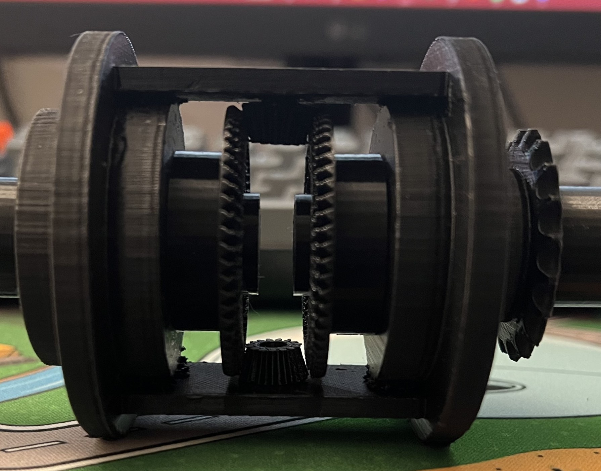
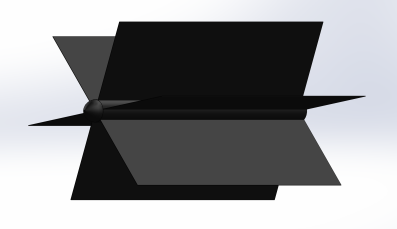
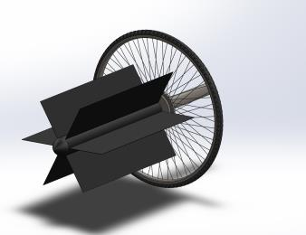
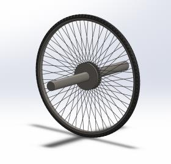
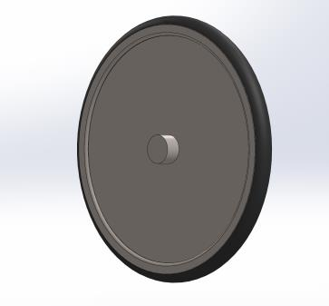

Academic · Mechanical Design
A human-powered vehicle designed to drive on land and paddle on water, where I designed the drive and propulsion components — the wheels, the paddle wheel, and the rear steering assembly.

The Water-Lander was my mini capstone: a four-person project to design a human-powered amphibious vehicle — one machine that had to work as a bicycle on land and as a paddle craft on water, powered entirely by the rider in both cases.
That dual requirement is what makes the problem interesting. A wheel that performs well on gravel is not a wheel that moves water, and a paddle sized for thrust becomes a liability the moment it is dragging through dirt. Every component on the drive side had to work in two environments that wanted opposite things from it.
My scope was that drive side: the front wheel, the paddle wheel, and the rear steering assembly.
The paddle wheel radius was set at 207 mm, two thirds of the front wheel radius. Keeping the paddles inside the footprint of the larger wheel means they clear the ground on land, so gravel and debris do not wear them down between water crossings. Sizing the paddle relative to the wheel rather than on its own was the decision that let one drivetrain serve both modes.
The front wheel was specified around the terrain rather than the vehicle: a standard 700c steel rim, 36 spokes, with a 27 mm rim width chosen because the vehicle was expected to run on rocky and gravelly ground. A narrower rim would have been lighter and far less forgiving on loose surfaces.
Steering was handled at the back through a smaller steel wheel — 150 mm rim radius, 163 mm overall with the rubber, on an 18 mm shaft. Putting the steering at the rear kept the front end free for the paddle drive, which was the more constrained of the two ends.




The plan was to 3D print a scaled prototype of the full vehicle for the final review. That did not happen. The scaling did not survive the translation from CAD to print: features that were reasonable at full size became too fine to print reliably once scaled down, and parts that mated cleanly in SolidWorks would not assemble as printed.
With the deadline fixed, I changed the target instead of the schedule. Rather than present nothing physical, I printed the differential assembly on its own — the bevel gear set that splits drive between the wheels — at a scale where its features actually survived the printer. It is the piece shown at the top of this page, and it is what we brought to the faculty presentation.
The lesson was that I had treated scaling as a final step rather than a design constraint. Wall thicknesses, clearances, and feature sizes need to be checked against the manufacturing process at the size you actually intend to build — not validated in CAD at full size and shrunk afterward.
This was an early project, and it is the one where I learned that a design is only as good as the constraints you remember to check it against. The decisions that held up — paddle clearance, rim width for terrain, steering placement — were the ones tied to a specific physical constraint. The part that failed was the one where I assumed the geometry would simply carry over.
It also taught me to keep something presentable in reserve. Walking in with the differential instead of nothing is a habit I have kept.